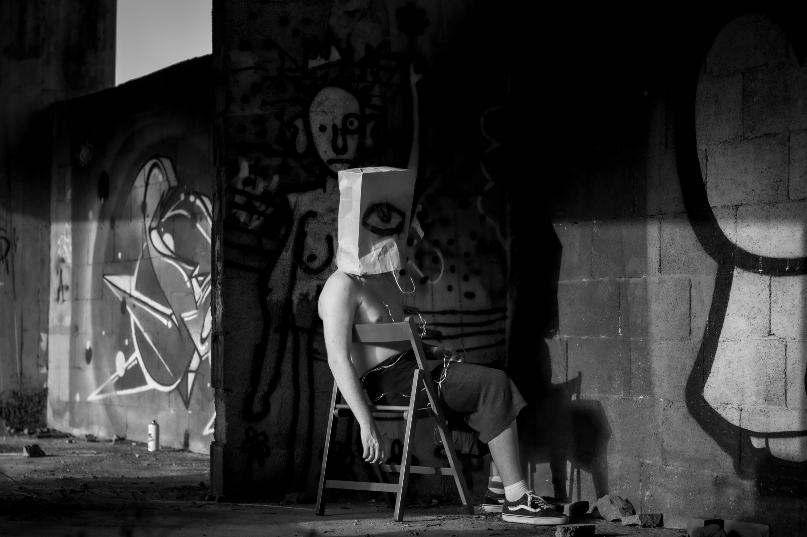

OCULUS — IDENTITÀ CONTAMINATE

"Oculus" è un progetto che esplora la profondità dell'individualità, mettendo in luce il conflitto tra la vera essenza e le influenze sociali. Ispirato allo stile di Roger Ballen, il lavoro si sviluppa come un viaggio interiore che abbraccia il degrado circostante, trovando una forma di bellezza nella decadenza. Il titolo stesso simboleggia l'occhio, ovvero la prospettiva individuale e il processo di auto-riflessione.
